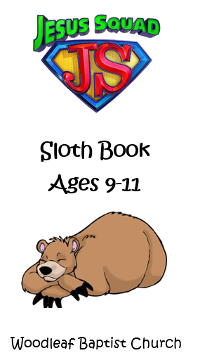

The Jr. Youth Ministry of WBC, Jesus Squad, exists to bring young people into age appropriate ministry, where they are equipped to develop a deeper relationship with christ and encouraged to build uplifting relationships with others. The leaders are committed to surrounding our young people with unconditional love that fosters genuine relationships, energizes, and equips them to extend the love of Christ to the world.
Jesus Squad leaders
Cindy Davis: Cindy_white@bellsouth.net
Cheryl Earnhardt: Cearnhardt@engage2excel.com

We have many exciting things planned for this year. This year we will be starting bear books, to help children learn about God’s word and how to apply it to their own lives. Our group name is “Jesus Squad” and our books are based on Bear Names. First year will be Cubs! Followed by Koala, Sloth, Panda, Polar and finally Grizzly. We want to partner with the parents to make each child’s experience a good one. After all, things taught in Jesus Squad are some of the most important things anybody can ever know. We will learn about the Bible, about who God is, about God’s Son, Jesus Christ, and about the way God wants us to live our lives. One to two sections each week is all your child needs to do to complete this entire book in a year. Let them recite the verses to you to make sure they are memorized, and so you can help with any difficulties. With our books, it is very important to keep working with your child all year.This book has a lot of important Information. The book is designed for you to complete 1 section per week. If you complete 1 section per week, you will finish this book in one year! When you finish a Chapter, you will earn a badge to put on your Jesus Squad Sash! By the end of the year, your sash will be full of Badges you have earned. Throughout the year we will have you wear your sash to church to show off your hard work!! We will review the sections in class. If you can recite the work to your Jesus Squad leader, she will sign off on your section and you will earn points for the Jesus Squad Store! When you finish the entire chapter, you earn your badge. You can work ahead or stay current each week. At the end of the chapter, we will review to make certain you are remembering your work. Throughout the book, we will also review because this is God’s Word and it is important!!
| Date | Theme | Description |
|---|---|---|
| 12/5/2018 | Airplane Night | bring paper airplane to fly |
| 12/12/2018 | Service Profession Night | dress as your favorite service professional. (fireman, policeman, trash man, etc) |
| 12/14/2018 | Gingerbread Party | come make your own ginger bread house |
| 12/19/2018 | Jesus' Birthday Party | birthday party for Jesus |
| 12/26/2018 | Jammies for Jesus | wear your favorite pjs and slippers |
| 1/2/2019 | Toilet Paper Night | bring a roll of toliet paper to wrap Ms. Cindy and Ms, Cheryl |
| 1/9/2019 | BARF Night | Bring a friend night(get double points) |
| 1/16/2019 | Glow Night | wear white shirts so you will glow |
| 1/23/2019 | Pastor Night | Preacher Chris will join us for snacks |
| 1/30/2019 | Crazy T-shirt Night | wear as many t-shirts as you can 10 pionts for each shirt |
| 2/6/2019 | Ugly Sweater Night | wear old ratty ugly sweater big or small |
| 2/13/2019 | Valentine's Night | valentine party - bring your classmate a valentine |
| 2/20/2019 | BARF Night | Bring a friend night(get double points) |
| 2/23/2018 | Skate Day | We will be going skating from 12:00-2:30pm |
| 2/27/2019 | Crazy Sock Night | Wear your craziest pair of socks |
| 3/6/2019 | Speed Week | pine wood derby race (will send home more info a little later) |
| 3/13/2019 | March Madness | wear your favorite college gear |
| 3/20/2019 | Crazy Hat Night | Wear a crazy hat |
| 3/27/2019 | Noah's Night | Bring your favorite stuffed animal |
| 4/3/2019 | Pastor Night | Preacher Chris will join us for snacks |
| 4/10/2019 | BARF Night | Bring a friend night(Get double points) |
| 4/12/2018 | Lock In | join us for a sleep over filled with fun and games |
| 4/17/2019 | Backwards Night | Wear all your clothes backwards |
| 4/24/2019 | Sundae Spectacular | Come tonight for an icecream sundae! |
| 5/1/2019 | Luau Night | Dress in your best Hawaian luau gear |
| 5/8/2019 | Show and Tell Night | bring your favorite toy or item you want to tell the class about. (Don’t bring anything you wouldn’t talk about in front of God) |
| 5/15/2019 | Camo Night | wear camo |
| 5/22/2019 | Crazy Glasses Night | wear some crazy looking glasses |
| 5/29/2019 | BARF Night | Bring a friend night(get double points) |
| 6/5/2019 | Beach Night | come dressed in old clothes for water games/bring a towel |
| 6/12/2019 | VBS | Come to Vacation Bible School(have fun) |
| 6/19/2019 | Mr. Potato Night | bring a potato to make a potato pet |
| 6/22/2019 | Pool Party | Come to Mrs. Cindy's house ready to swim |
| 6/26/2019 | Boat Night | Bring a boat for boat races |
| 7/3/2019 | Patriotic Night | wear red, white, and blue |
| 7/10/2019 | Pastor Night | Preacher Chris will join us for snacks |
| 7/17/2019 | BARF Night | bring a friend night(get double points) |
| 7/24/2019 | Watermelon Night | Come ready to eat watermelon |
| 8/7/2019 | God is our rock | bring a rock to paint |
| 8/14/2019 | Pizza Night | pizza party |
| 8/21/2019 | Drive in Movie Night | popcorn and movie in your car made out of cardboard (we will have available for each child) |
| 8/24/2019 | Jumping Time | Lets go to bounce city for some fun |
| 8/28/2019 | Carnival Night | Games and carnival foood YUM! |
| 9/4/2019 | I wanna be... | come dressed in what you wish to be one day. (fireman, bullrider, nurse, doctor, etc) |
| 9/11/2019 | Wacky Tacky Night | Bring a boat for boat races |
| 9/18/2019 | Mismatch night | wear mismatch shoes, socks, clothes, etc. |
| 9/25/2019 | Silly String Night | silly string Ms. Cindy and Ms. Cheryl |